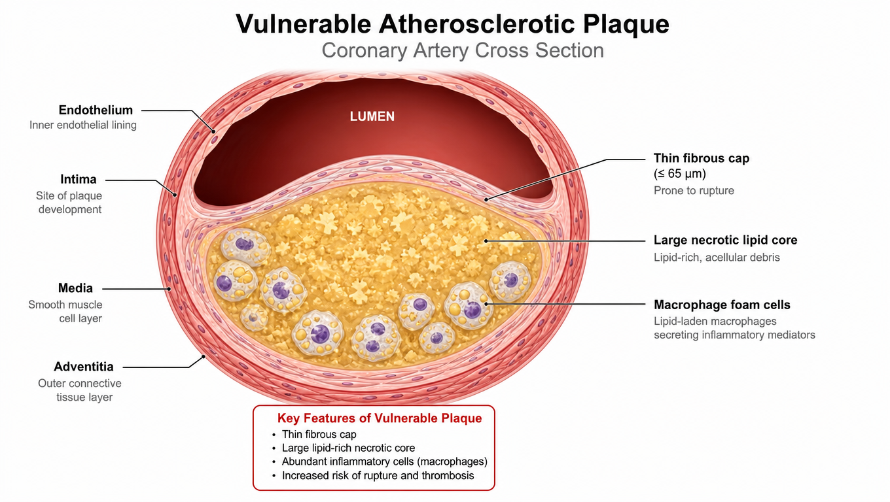
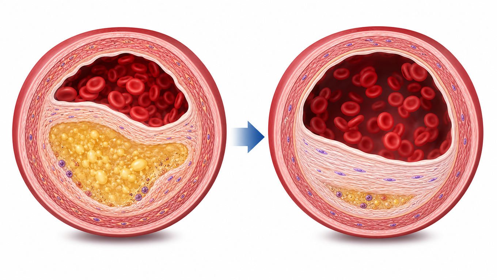
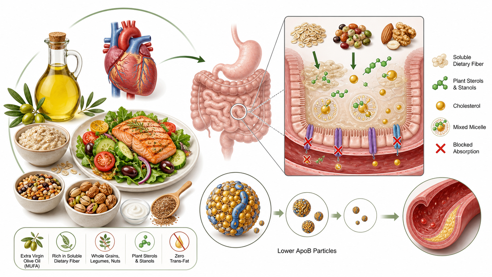
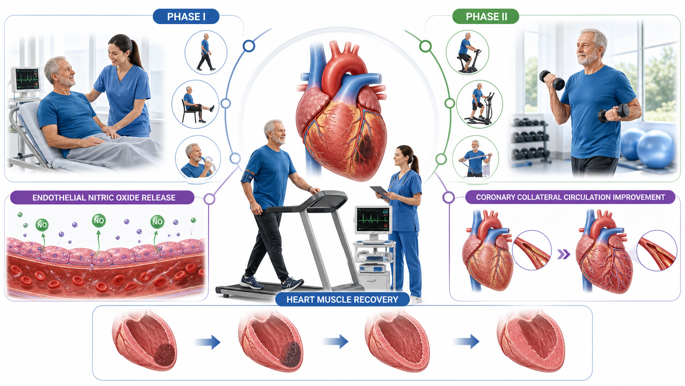
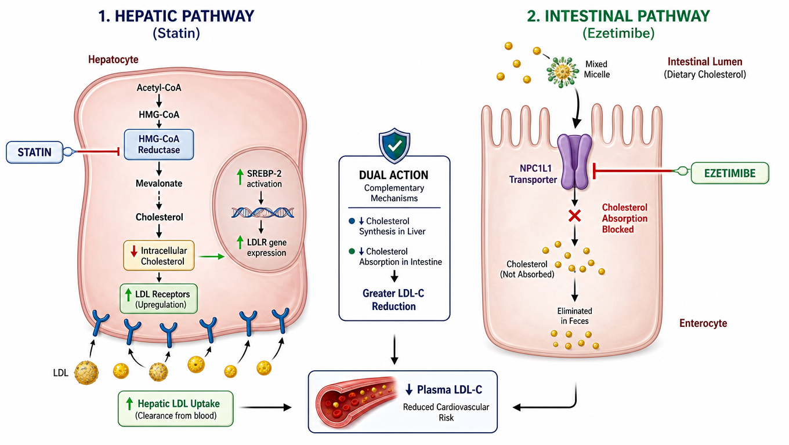
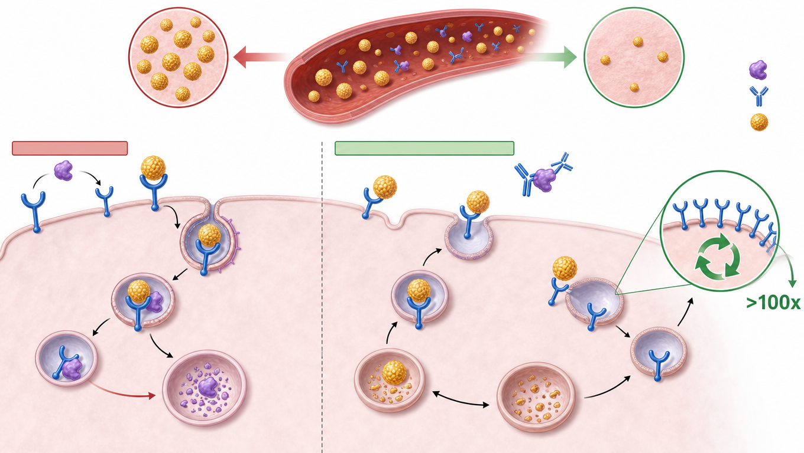

Preventing the Next Heart Attack: LDL Management 預防下一次心肌梗塞：STEMI 後的 LDL 膽固醇管理
CHEN, CHIH-WEI ｜ Third-Year Medical Student, National Taiwan University 陳致瑋 ｜ 國立臺灣大學醫學系三年級
The acute vessel is wide open.
Why is Mr. Hong still at mortal risk?
急性阻塞血管已完全打通，
為何洪先生依然面臨致命危機？
A 48-year-old gentleman underwent successful primary PCI for an acute anterior STEMI. Revascularization was completed within 38 minutes. Yet his admission LDL-C was 173 mg/dL. While the stent fixed a 48 mm segment, his entire vascular tree remains under attack. 48 歲洪先生因急性前壁心肌梗塞緊急接受心導管，38 分鐘內置放支架成功恢復血流。然而入院抽血顯示其 LDL-C 高達 173 mg/dL。支架僅修復了 48 毫米的血管，全身冠狀動脈樹依然處於高脂血症的全面威脅中。
Core Presentation Pillars 本次報告三大核心主軸
Why 50% of recurrent MIs occur at non-stented sites.為何五成復發梗塞發生於未放支架處。
≥50% reduction AND absolute LDL < 55 mg/dL.降幅 ≥50% 且絕對值 < 55 mg/dL。
Nutrition, rehab, and upfront Statin + Ezetimibe.地中海飲食、心臟復健與雙合降脂。
1. 2026 ACC/AHA Guideline on Blood Cholesterol. Circulation. 2026;153(1):e1-e120. | 2. NTU Medicine Case Study 2026.
Good morning, professors and colleagues. I am Chih-Wei Chen from National Taiwan University. Today, we examine an essential clinical dilemma: why opening an occluded coronary artery with a stent is only the very first step in secondary prevention.
Meet Mr. Hong: Successful Stent, Hidden Danger 個案呈現：急救成功，但體內隱藏致命危機
A 48-year-old gentleman revascularized within 38 minutes presents a critical metabolic challenge 48歲洪先生在 38 分鐘內完成再灌流，但面臨嚴峻的全身脂質代謝挑戰
1. The Blockage is Cleared 1. 局部血管順利打通
- LAD Occlusion:左前降支阻塞： 100% blocked with acute red thrombus.100% 急性紅色血栓完全堵塞。
- Synergy Stent:塗藥支架： 48 mm drug-eluting stent successfully deployed.成功置入 48 mm 長段藥物塗層支架。
- Heart Function:左心室功能： Post-PCI LVEF preserved at 58%.術後超音波評估射出率維持 58%。
2. The Underlying Threat 2. 體內持續潛伏的威脅
- Low Protective HDL:保護性 HDL 偏低： 38 mg/dL (Non-diabetic, non-hypertensive).38 mg/dL（無糖尿病、無慢性高血壓）。
- Total Cholesterol:總膽固醇： 248 mg/dL with severe atherogenic burden.高達 248 mg/dL，體內動脈粥樣硬化負荷極高。
- The Core Dilemma:核心困境： Stent fixed 48 mm. But with LDL 173, what about the rest?支架修復了 48 mm，但面對 173 的高血脂，其餘血管何去何從？
1. Damluji AA, et al. Mechanical Complications of Acute Myocardial Infarction. Circulation. 2021;144(2):e16-e35. | 2. NTU Case Record 2026.
Meet our patient, Mr. Hong, a forty-eight-year-old gentleman rushed to the ER with a severe anterior wall myocardial infarction.
The cardiac team performed an exemplary job: within thirty-eight minutes, door-to-balloon time, they placed a forty-eight-millimeter drug-eluting stent and restored full TIMI three flow.
However, admission lab results revealed an LDL cholesterol of 173 milligrams per deciliter. While the stent fixed a forty-eight-millimeter segment, this high systemic cholesterol continues to endanger the rest of his coronary tree.
Local Stent vs. Systemic Plaque Biology 局部支架處理 vs. 全身動脈粥樣硬化病理
Why 50% of recurrent myocardial infarctions occur at non-stented coronary sites 為何高達 50% 的復發性心肌梗塞，發生在未置放支架的遠端血管
Stenting Clears Only 5% 支架僅能保護 5% 血管
- PROSPECT Trial:PROSPECT 經典試驗： 50% of recurrent events occur at untreated, non-stented sites.高達一半的再發心肌梗塞，發生於未放支架的遠端病灶。
- Systemic Danger:全身動脈威脅： Circulating LDL continuously infiltrates the intima of the entire coronary tree.血液中過高的 LDL 持續滲透全身動脈內膜，引發廣泛發炎。
Plaque Pathology & Vulnerability (易裂斑塊病理機轉) 易裂薄帽粥樣斑塊 (TCFA) 病理機轉
Click image to enlarge 🔍點擊圖片放大 🔍
Thin-Cap Fibroatheroma (TCFA): Massive necrotic lipid core covered by a fragile fibrous cap (<65 μm). Macrophage foam cells secrete matrix metalloproteinases (MMPs), weakening the cap until rupture triggers sudden thrombosis. 易裂薄帽粥樣斑塊 (TCFA)： 巨大壞死脂質核心上方僅有脆弱的極薄纖維帽 (<65 μm)。泡沫細胞分泌基質金屬蛋白酶 (MMP) 溶解膠原蛋白，一旦破裂立即引發致命血栓。
Stone GW, et al. A Prospective Natural-History Study of Coronary Atherosclerosis (PROSPECT Trial). N Engl J Med. 2011;364(3):226-235.
To protect Mr. Hong, we must clearly distinguish between a local vascular fix and a systemic disease process.
His stent covers forty-eight millimeters. But the coronary arterial tree extends over one thousand millimeters. Stenting clears only five percent of his vessels.
In the PROSPECT trial, half of all recurrent heart attacks occurred at non-stented sites. High circulating LDL particles continuously infiltrate the vessel wall, creating fragile plaques that can rupture at any moment.
2026 ACC/AHA Guideline: The Dual Target 2026 ACC/AHA 最新血脂指引：雙重達標準則
Evidence-based threshold for vascular remodeling and fibrous cap stabilization 血管內超音波證實：促成纖維帽增厚與斑塊退縮的實證門檻
Two Strict Rules for STEMI STEMI 極高風險患者的兩大鐵律
- Both Must Be Met:雙重達標必備： Reaching only one criterion is considered treatment failure in 2026 guidelines.只達成降幅或只達成絕對值，皆視為臨床控制未達標。
- Mr. Hong's Math:洪先生的目標： From 173 to < 55 mg/dL requires a massive absolute drop of 118 mg/dL (68%).從 173 降至 < 55 mg/dL，需要降低整整 118 mg/dL (68%)。
Cap Thickening & Plaque Regression (纖維帽增厚實證) 纖維帽增厚與斑塊退縮機制
Click image to enlarge 🔍點擊圖片放大 🔍
IVUS/OCT Evidence: When LDL drops below 55 mg/dL, cholesterol efflux from macrophages exceeds influx. The lipid core shrinks, and smooth muscle cells synthesize dense collagen, transforming vulnerable thin caps into thick, stable fibrous protective barriers. 血管超音波 (IVUS/OCT) 實證： 當 LDL 降至 55 mg/dL 以下，膽固醇逆向流出超過沉積。壞死核心顯著萎縮，血管平滑肌合成緻密膠原蛋白，使薄弱纖維帽顯著增厚，徹底解除破裂風險。
1. 2026 ACC/AHA Guideline on Blood Cholesterol. Circulation. 2026;153(1):e1-e120. | 2. Nicholls SJ, et al. J Am Coll Cardiol. 2018;72(24):3112-3121.
What is our evidence-based goal for Mr. Hong? The latest 2026 ACC and AHA guidelines mandate two strict rules for very-high-risk patients.
First, achieve at least a fifty percent reduction from baseline. Second, reach an absolute LDL level below fifty-five milligrams per deciliter.
Why below fifty-five? Intravascular ultrasound trials prove that atherosclerotic plaques stop growing and actually regress only when LDL drops below this critical threshold.
Nutrition Strategy: Mediterranean Diet 非藥物治療策略一：地中海飲食與血脂調控
Targeting intestinal absorption and hepatic lipoprotein synthesis via dietary biology 從腸道吸收與肝臟脂蛋白合成切入：飲食介入可額外降低 10–15% LDL
Cardiovascular Dietary Biology (地中海飲食生化機轉) 心血管保護飲食生化機轉
Click image to enlarge 🔍點擊圖片放大 🔍
Synergistic Nutrient Matrix: Monounsaturated fats from Extra Virgin Olive Oil protect LDL against atherogenic oxidation. Soluble fiber binds intestinal bile acids, while plant stanols displace cholesterol from dietary micelles. 多靶點營養協同： 特級初榨橄欖油富含單元不飽和脂肪酸，防止 LDL 氧化致粥樣硬化；可溶性纖維阻斷膽鹽再吸收，植物固醇則在腸道競爭性排擠膽固醇微膠粒。
Lowers LDL by 10% to 15% 飲食介入可額外降低 10–15% LDL
Oats, psyllium, and legumes bind bile acids in the gut, forcing the liver to clear circulating LDL.燕麥、洋車前子與豆類結合腸道膽酸，迫使肝臟加速消耗血液中的 LDL。
Competitively inhibits intestinal cholesterol uptake, yielding an additional 7–10% LDL reduction.競爭性阻斷腸道微膠粒對膽固醇的吸收，提供額外 7–10% 的 LDL 降幅。
Completely eliminate partially hydrogenated oils; substitute with extra virgin olive oil and nuts.徹底禁絕氫化植物油與高溫油炸物，以特級初榨橄欖油與堅果取代動物飽和脂肪。
Estruch R, et al. Primary Prevention of Cardiovascular Disease with a Mediterranean Diet (PREDIMED). N Engl J Med. 2018;378:e34.
Before adding drugs, non-pharmacological management is the indispensable foundation for every heart attack patient.
First, dietary changes: shifting to a Mediterranean diet, eliminating trans fats, and adding soluble fiber and plant stanols can lower circulating LDL by ten to fifteen percent.
Rehab Strategy: Structured Exercise 非藥物治療策略二：心臟復健與規律運動處方
Exercise-induced endothelial repair, autonomic balance, and 26% mortality reduction 透過運動促進血管內皮修復、自律神經平衡，降低 26% 心血管死亡率
Exercise Physiology & Endothelial Repair (運動內皮修復機轉) 運動誘發血管內皮修復機轉
Click image to enlarge 🔍點擊圖片放大 🔍
Vascular Biomechanics: Regular aerobic exercise increases laminar shear stress on endothelial cells, stimulating endothelial Nitric Oxide Synthase (eNOS) and mobilizing endothelial progenitor cells to repair damaged coronary walls. 血管生物力學效應： 規律有氧運動提高血管壁層流剪力，刺激內皮一氧化氮合成酶 (eNOS) 分泌 NO 擴張冠狀動脈，並召喚內皮前驅細胞修補受損管壁。
26% Drop in CV Mortality 顯著降低 26% 心血管死亡率
- Phase I (Inpatient):第一階段 (住院期)： Early mobilization within 24h of PCI; bedside education & smoking cessation.PCI 術後 24 小時內啟動床邊溫和活動；出院前完成戒菸諮詢。
- Phase II (Outpatient Supervised):第二階段 (門診監督式)： 12-week supervised aerobic and light resistance training at 60–80% VO2 peak.12 週心電圖全程監控，漸進式維持於 60–80% 峰值攝氧量強度。
Lawler PR, et al. Exercise-based cardiac rehabilitation for CAD: A systematic review and meta-analysis. Am Heart J. 2011;162(4):571-584.
Second, structured cardiac rehabilitation and smoking cessation: exercising 150 minutes weekly cuts cardiovascular mortality by 26 percent and helps stabilize plaques.
The Math: Why Statin Monotherapy Fails 數字真相：為何單用高劑量 Statin 無法達標
The clinical calculation reveals an unavoidable 31.5 mg/dL gap to target 臨床量化計算揭示：單一機轉存在無法跨越的 31.5 mg/dL 缺口
High-Intensity Statin Alone: -50% 高強度 Statin 極限僅能降 50%
- Baseline LDL:基準數值： 173 mg/dL.
- Max 50% Drop:最大降幅 50%： 173 × (1 - 0.50) = 86.5 mg/dL.
- The Persistent Gap:殘存巨大缺口： 86.5 - 55 = 31.5 mg/dL above target!
The "Rule of Six" Dilemma Statin「六法則」的邊際遞減困境
- Rule of Six:六法則限制： Doubling statin dose only yields ~6% additional LDL reduction.每加倍一次 Statin 劑量，僅能換取微弱的 6% 額外降幅。
- Doubled Risks:副作用激增： Myopathy, transaminitis, and statin intolerance escalate rapidly.肌肉痠痛、橫紋肌溶解與肝功能異常指數成倍數增長。
- Clinical Conclusion:臨床結論： You cannot bridge a 31.5 mg/dL gap simply by pushing statin doses!絕不可能單靠狂加 Statin 劑量來填補 31.5 mg/dL 的深淵！
Cannon CP, et al. Simulation of Statin and Ezetimibe Intensity in Very-High-Risk Patients. J Am Coll Cardiol. 2019;74(18):2205-2215.
Let us calculate the clinical math for Mr. Hong on standard statin therapy.
His baseline LDL is 173. A high-intensity statin lowers LDL by 50 percent, bringing him down to 86.5 milligrams per deciliter.
However, our target is below fifty-five. That leaves a persistent gap of over thirty-one milligrams. Doubling the statin dose only yields six percent more reduction. Monotherapy simply cannot get him to goal.
The Solution: Combine Statin with Ezetimibe 雙路徑突破：Statin 合併 Ezetimibe 協同機轉
Simultaneous inhibition of hepatic synthesis and intestinal absorption 同時阻斷肝臟膽固醇合成與小腸吸收：降幅高達 65%
Dual Organ Cellular Mechanism (肝腸雙靶點機轉) 肝臟與小腸雙靶點細胞藥理機轉
Click image to enlarge 🔍點擊圖片放大 🔍
Complementary Action: 1. Statin: Inhibits HMG-CoA Reductase in hepatocytes → drops intracellular cholesterol → upregulates surface LDL Receptors. 2. Ezetimibe: Selectively blocks NPC1L1 transporters in jejunal enterocytes, eliminating dietary and biliary reabsorption. 雙重完美互補： 1. Statin： 抑制肝細胞 HMG-CoA 還原酶 → 細胞內膽固醇降低 → 促使肝細胞表面 LDL 受體大量表現。 2. Ezetimibe： 精準阻斷小腸空腸細胞的 NPC1L1 轉運蛋白，杜絕飲食與膽汁中的膽固醇被重新吸收。
Synergistic 65% Reduction 協同降幅高達 65%
- IMPROVE-IT Trial:IMPROVE-IT 試驗： Adding Ezetimibe to statin significantly reduced major cardiovascular events in post-ACS patients.急性冠心症後加用 Ezetimibe 顯著降低心血管事件復發率。
- Ez-PAVE Trial:Ez-PAVE 試驗： Starting combination therapy upfront before hospital discharge doubled the 12-week goal attainment rate.出院前及早直接啟動雙合降脂，使達標率 (<55 mg/dL) 翻倍且極具安全性。
1. Cannon CP, et al. (IMPROVE-IT). N Engl J Med. 2015;372(25):2387-2397. | 2. Ez-PAVE Investigators. J Clin Lipidol. 2024.
How do we bridge this gap? By combining two complementary biological pathways.
The statin stops the liver from synthesizing cholesterol. Ezetimibe blocks the gut from absorbing cholesterol through the NPC1L1 transporter. Together, they provide a sixty-five percent drop.
The recent Ez-PAVE and IMPROVE-IT trials demonstrated that starting combination therapy upfront before discharge doubles goal achievement without increasing adverse events.
Beyond Dual Therapy: PCSK9 Inhibitors 進階升階武器：PCSK9 抑制劑單株抗體
Targeting receptor recycling to eliminate refractory circulating LDL particles 阻斷 LDL 受體分解，促進受體百次循環回收，強效清除頑固血脂
LDLR Recycling vs Lysosomal Destruction (受體循環機轉) LDL 受體循環與溶酶體分解機轉
Click image to enlarge 🔍點擊圖片放大 🔍
Receptor Fate: PCSK9 binds hepatic LDL Receptors, directing them into lysosomes for premature destruction. Monoclonal antibodies (Evolocumab / Alirocumab) bind PCSK9, liberating LDLRs to recycle back to the hepatocyte membrane over 100 times. 受體的命運： PCSK9 會與肝細胞表面的 LDL 受體結合，並將其押送至溶酶體徹底摧毀。PCSK9 單株抗體中和此蛋白質，解放 LDL 受體使其能反覆循環回細胞膜超過 100 次。
Additional 60% Reduction 在雙藥基礎上再強效暴降 60%
- FOURIER & ODYSSEY:FOURIER 與 ODYSSEY： Achieves ultra-low LDL levels (30 mg/dL) safely, with zero neurocognitive or autoimmune signals.安全達成極低血脂值 (30 mg/dL)，未見任何認知功能減損或自體免疫毒性。
- Clinical Escalation:臨床升階準則： If Mr. Hong's 4-week post-discharge LDL remains ≥ 55 mg/dL on dual oral therapy, add PCSK9i immediately.出院第 4 週回診若口服雙藥仍未能壓在 55 mg/dL 以下，立即加用 PCSK9i！
Sabatine MS, et al. Evolocumab and Clinical Outcomes in Patients with Cardiovascular Disease (FOURIER). N Engl J Med. 2017;376(18):1713-1722.
What if Mr. Hong's LDL remains above fifty-five at follow-up? We deploy our third weapon: a PCSK9 inhibitor.
PCSK9 is a protein that destroys LDL receptors in the liver. By blocking PCSK9 with an injectable monoclonal antibody, receptors survive to recycle over one hundred times, clearing massive amounts of LDL from the blood.
In the FOURIER and ODYSSEY trials, adding a PCSK9 inhibitor produced an extra sixty percent drop, pushing LDL down to thirty or forty and slashing secondary heart attacks.
Clinical Roadmap: Acute to Chronic Care 臨床決策路徑：從急性救治到慢性照護歷程
Structured 3-phase management ensuring permanent plaque stabilization 結構化三階段連續處置：從導管室到終身穩固血管斑塊
In-Hospital Stabilization 緊急打通與出院前起始
- Primary PCI:緊急心導管： LAD stent deployed within 38 minutes.38 分鐘內置放 LAD 塗藥支架。
- Upfront Dual Rx:及早起始雙藥： High-intensity statin + Ezetimibe 10 mg started immediately.高強度 Statin ＋ Ezetimibe 10mg 同時開立。
- Inpatient Rehab:床邊衛教： Bedside mobilization & smoking cessation counseling.床邊早期復健活動，完成戒菸與地中海飲食衛教。
4-Week Recheck & Escalation 抽血複查與精準升階
- Lipid Panel:抽血檢驗： Evaluate LDL-C response at 4 weeks.出院 4 週回診檢測血脂全套。
- Target Check:評估達標： If LDL ≥ 55 mg/dL, escalate to PCSK9 inhibitor without delay.若數值仍 ≥ 55 mg/dL，毫不猶豫追加 PCSK9i。
- Rehab Phase II:門診心臟復健： 12-week supervised aerobic exercise program begins.展開 12 週心電圖監控之有氧運動訓練。
Lifelong Plaque Stability 終生維持與斑塊長期穩固
- Sustained Target:維持達標： Maintain LDL < 55 mg/dL to ensure permanent cap thickening.長期壓制 LDL < 55 mg/dL，確保纖維帽不變薄。
- Active Lifestyle:維持習慣： Mediterranean nutrition and 150 min/wk exercise.終身恪遵地中海飲食與每週 150 分鐘規律運動。
- Follow-up:定期追蹤： Lipids, liver enzymes, and renal function every 6–12 months.每 6–12 個月常規追蹤血脂與生化數值。
2026 ACC/AHA Multi-Society Prevention Practice Guidelines for Secondary Prevention. J Am Coll Cardiol. 2026.
Here is Mr. Hong's complete clinical roadmap from acute admission to lifelong survival.
In the acute phase, we place the stent, start combination statin plus ezetimibe before discharge, and begin bedside lifestyle and rehab counseling.
In the subacute phase at week four, we recheck his lipid panel. If he is not below fifty-five, we escalate to a PCSK9 inhibitor immediately.
In the chronic phase, maintaining low LDL and regular exercise ensures permanent plaque stabilization and long-term survival.
Clinical Outcome: Mr. Hong's Success 臨床成果追蹤：洪先生 6 週達標與斑塊穩定
Synergy of upfront dual pharmacotherapy and lifestyle adherence 出院前雙合治療搭配積極生活型態介入的卓越成效
52 mg/dL: Target Beaten! 達到 52 mg/dL：完美擊中目標！
- Dual Targets Met:雙重標準達成： Both ≥ 50% drop (70%) and absolute < 55 mg/dL (52) achieved.降幅達 70% 且數值 52 mg/dL，雙重門檻同時滿足。
- Safety Profile:安全性指標： ALT 24 U/L, CPK 98 U/L; zero muscle pain or side effects.肝功能 ALT 24 U/L、肌肉酶 CPK 98 U/L，完全無肌肉痠痛。
- No PCSK9i Required:省下昂貴藥費： Upfront dual oral therapy successfully avoided expensive escalation.口服雙藥即成功達標，免去昂貴之單株抗體自費注射負擔。
Back to Full Life 重返活力健康日常
- Cardiac Rehab:復健成效： Completed 12 supervised Phase II sessions with outstanding compliance.順利完成 12 次門診監督式心臟復健，依從性極佳。
- Lifestyle Transformed:生活重塑： Adhering strictly to Mediterranean diet; 100% smoke-free for 6 weeks.嚴格奉行地中海飲食，6 週內維持 100% 完全戒菸狀態。
- Back to Work:回歸社會： Returned to full-time engineering career and active family life.已順利重返全職工程工作與熱愛的家庭戶外生活。
Chen CW (陳致瑋), Third-Year Medical Student, National Taiwan University. Case Follow-Up 2026.
To conclude, Mr. Hong's case illustrates the vital synergy of lifestyle and modern lipid pharmacology.
With upfront statin plus ezetimibe and cardiac rehabilitation, Mr. Hong's six-week LDL reached fifty-two milligrams per deciliter, beating our target.
Conclusion: Returning to Healthy Life 總結與互動交流：掃描 QR Code 隨身查閱
Key clinical takeaways, mobile web access, and Q&A 核心臨床學習重點、手機隨身互動網頁與問答討論
Stents cover 5% of the coronary tree. 50% of recurrent MIs occur at non-stented sites. Plaque biology must be treated systemically.支架僅保護 5% 血管，半數復發梗塞源於他處。全身動脈粥樣硬化必須透過全身治療根治。
Achieving ≥ 50% drop AND absolute LDL < 55 mg/dL triggers fibrous cap thickening and true plaque stabilization.同時達成降幅 ≥ 50% 與絕對值 < 55 mg/dL，方能啟動纖維帽增厚與真正的斑塊逆轉。
Starting Statin + Ezetimibe before discharge overcomes the Rule of Six, doubling goal attainment safely.及早合併 Statin ＋ Ezetimibe 克服六法則瓶頸，安全倍增達標率；若未達標立即升階 PCSK9i。
Scan QR Code to Read on Phone 掃描 QR Code 隨身查閱
Supports English narration, Chinese voice-over, and full references 支援 Will 英文配音、大豪2 中文配音與完整 Vancouver 引文

1. 2026 ACC/AHA Guideline. Circulation. 2026. | 2. PREDIMED. NEJM. 2018. | 3. IMPROVE-IT. NEJM. 2015. | 4. FOURIER. NEJM. 2017. | 5. PROSPECT. NEJM. 2011.
Thank you very much for your time. You can scan the QR code to review the interactive deck on your phone. I look forward to your questions.